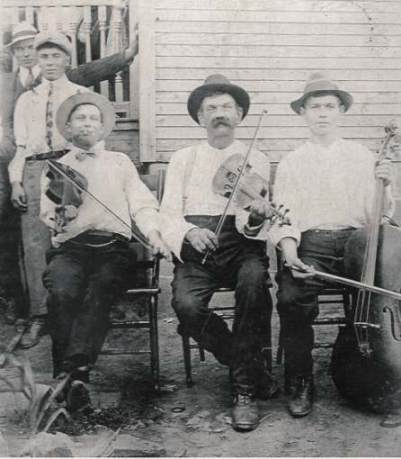
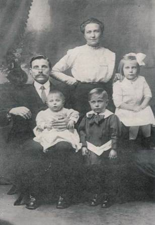
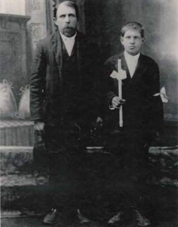
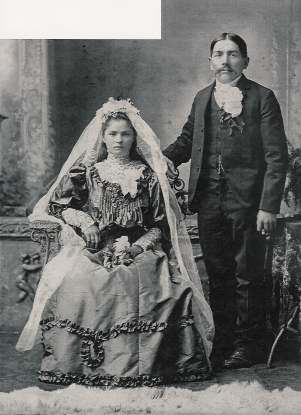

Emigracj do USA
Publikowame zdjęcia i informacje pochodzą od pani Joanne Kennedy
Emigracja z Żarówki i okolic do USA.

Mężczyzna po środku (grajacy na skrzypkach) to Jakub Frankowicz (1857 -1936), przyjechał on do USA w 1884 roku z pradziadkami p. Joanny z Żarówki. Jakub był synem Wawrzyńca i Katarzyny (Czapiga) Frankowicz. Jego żoną była Tekla Finor (1857 - 1927) również z Żarówki, była ona córką Jana i Katarzyny (Joniec) Finor. W USA żyli w Morann, PA i mieli 6-cioro dzieci.

Piotr Cichoń (1881 - 1956) urodzony w Żarówce syn Wojciecha i Katarzyny (Cymbor) Cichoń. Katarzyna była córką Józefa i Katarzyny (Frankowicz) Cichoń. Żona Mary Kasperowicz (1883 - 1929) i dzieci Frances (*1908), Józef (*1910), Walter (*1912).

Jan Jagoda (1850 - 1916) urodzony w Żarówce z synem Walentym (*1896). Przybył do USA w 1884 roku. Jan (pradziadek p. Joanny) był synem Wawrzyńca i Teresy (Czapiga) Jagoda.

Ślub 3 stycznia 1906. Kościół Św, Barbary, Houtzdale, PA. Teodor Nosal urodzony w 1868 roku w Żarówce, syn Jana i Reginy (Frankowicz) Nosal. Maria Cichoń urodzona w 1889 roku w Żarówce, córka Jana i Wiktorii (Czapiga) Cichoń. Mieli siedmioro dzieci. Teodor zmarł w 1905 roku.